La force de vente, maîtrisée
Le terrain
saisit.
Le siège
pilote.
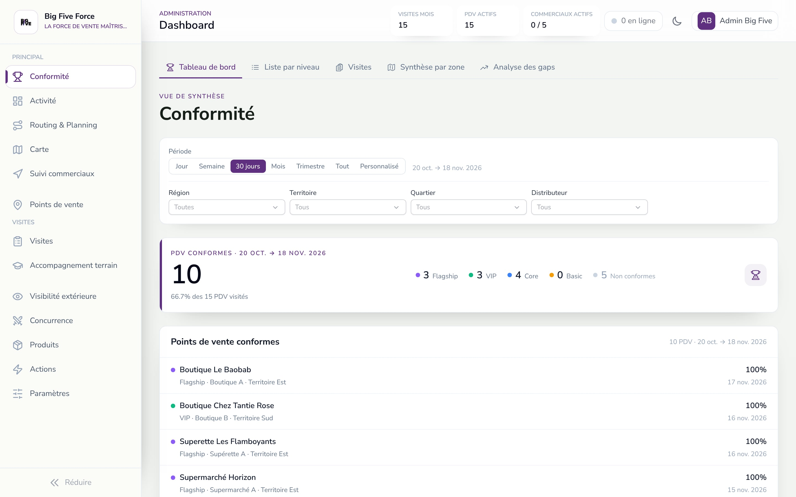
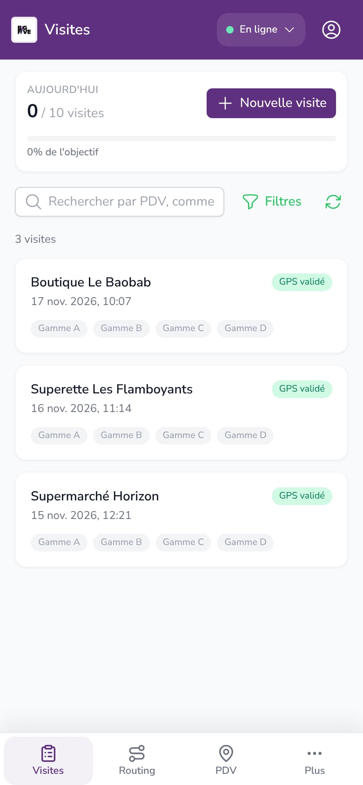
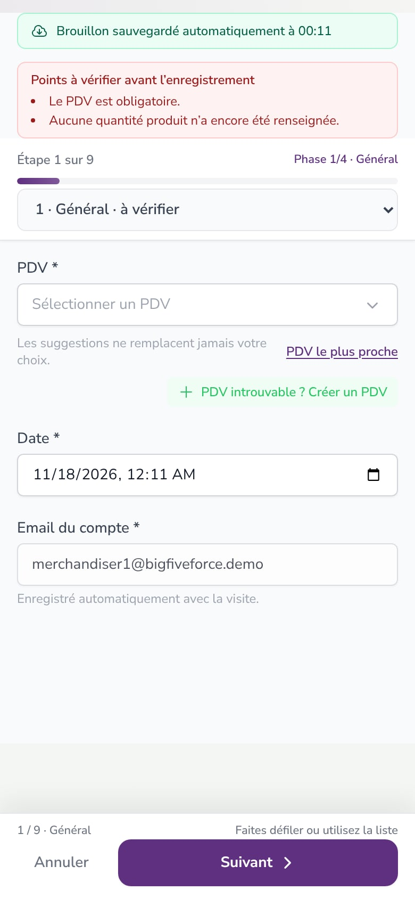
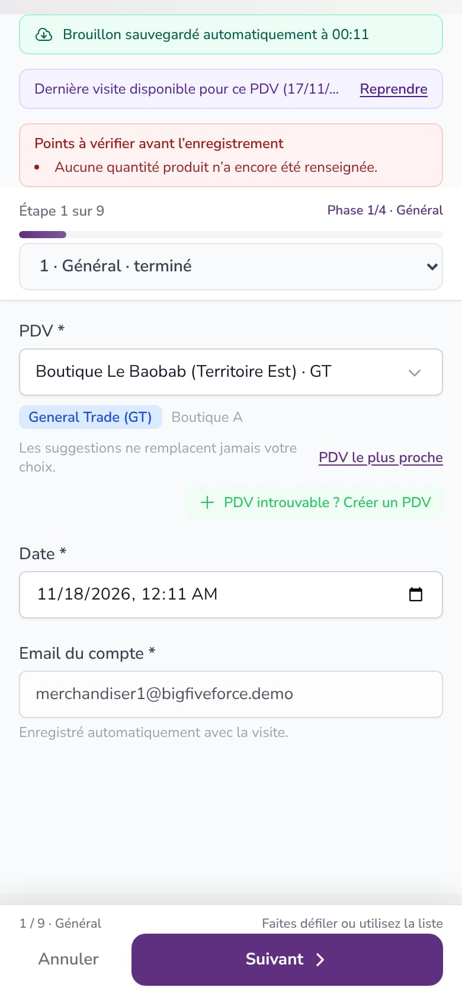
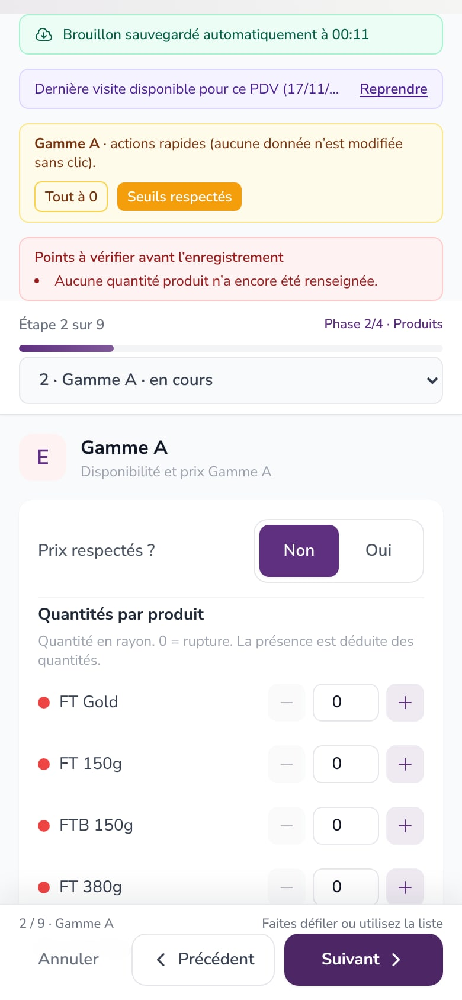
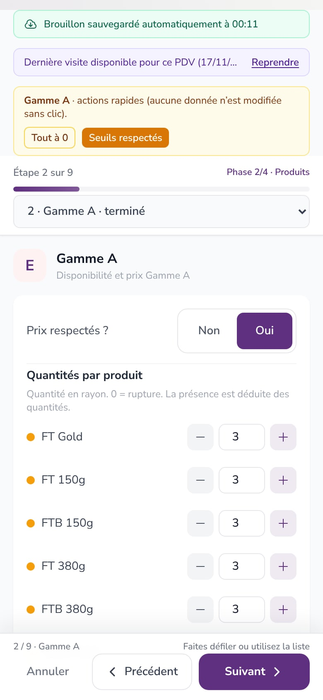
Le point de vente le plus proche est proposéPas de recherche dans une liste
Un parcours guidé, étape par étapeRien n’est oublié avant l’enregistrement
Les quantités se remplissent en un clicLe relevé d’un rayon en quelques secondes
La visite est validée sur placeDans un rayon de 200 mètres autour du magasin
Un relevé auquel vous pouvez vous fierVous savez qu’il a été fait dans le point de vente
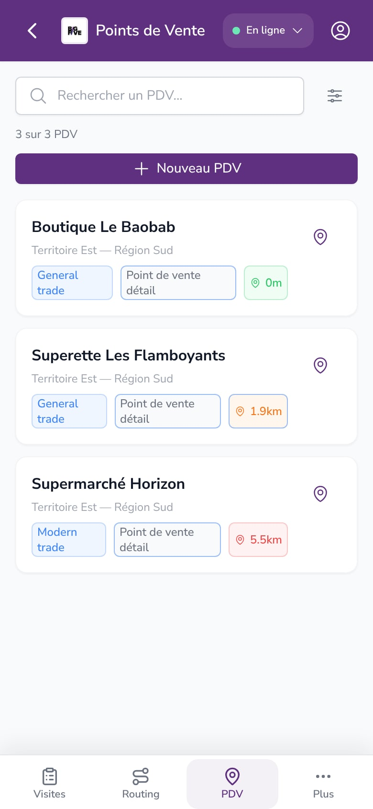
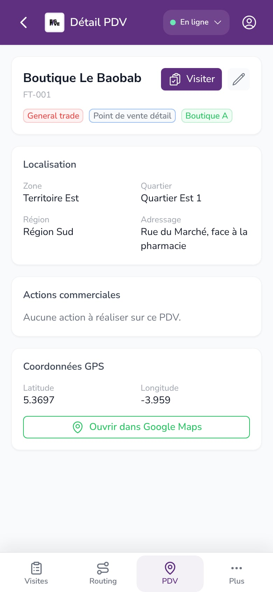
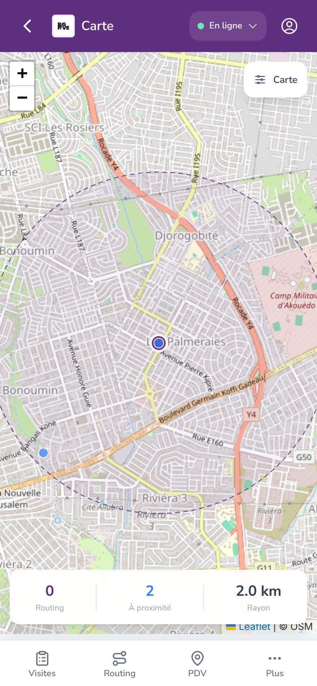
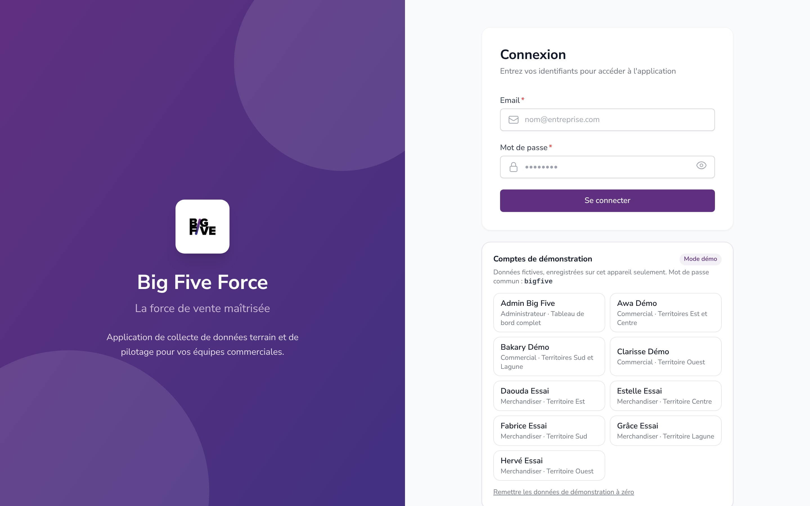
0 / 15
points de vente conformes
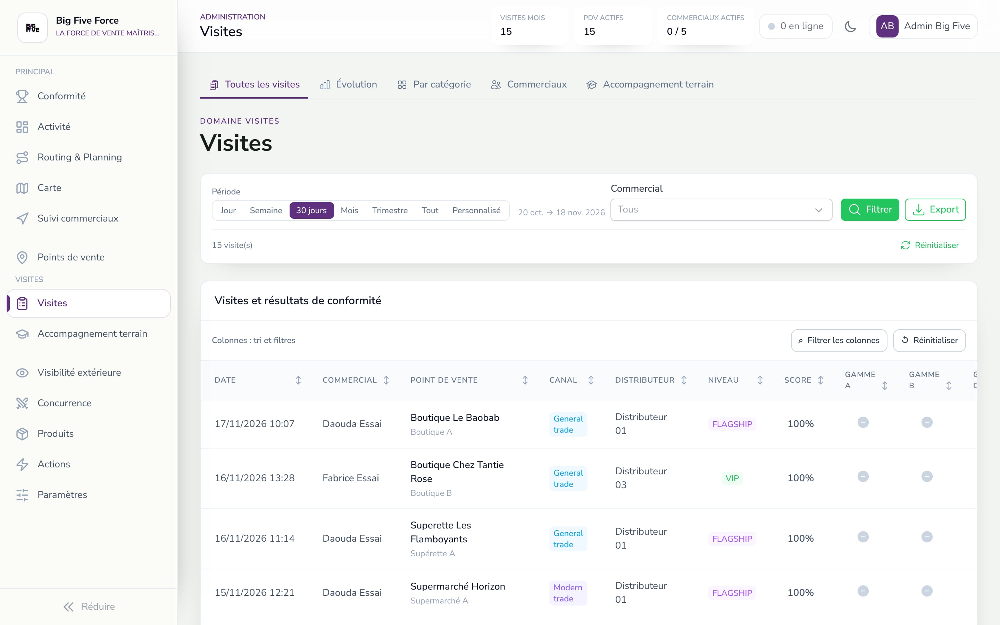
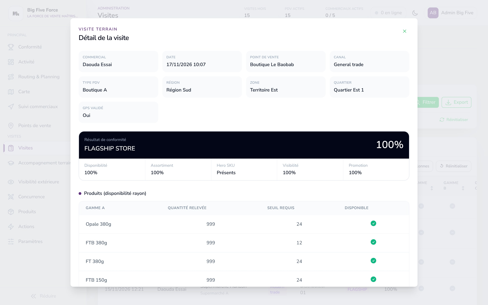
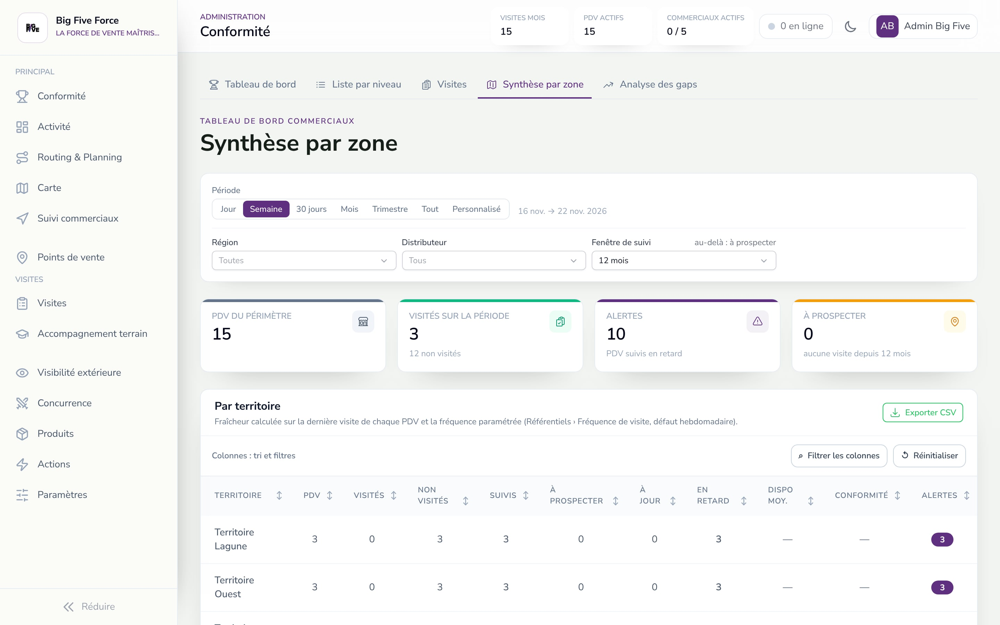
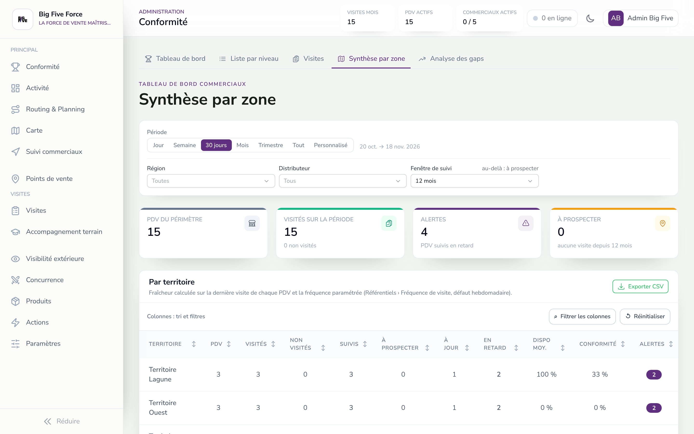
Le détail en un clicNiveau, score et relevé de chaque visite
La synthèse par zoneVisites, retards et conformité par territoire
Vous savez où agirLes territoires en retard ressortent
Administrateur
Voit tout
0
points de vente
Commercial
Ses territoires
0
points de vente
Merchandiser
Son territoire
0
points de vente
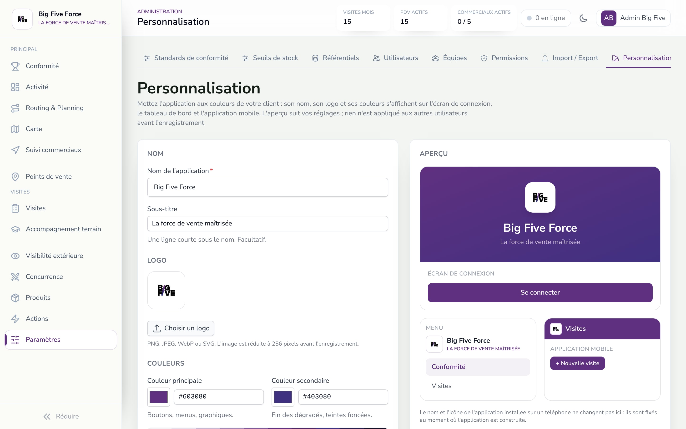
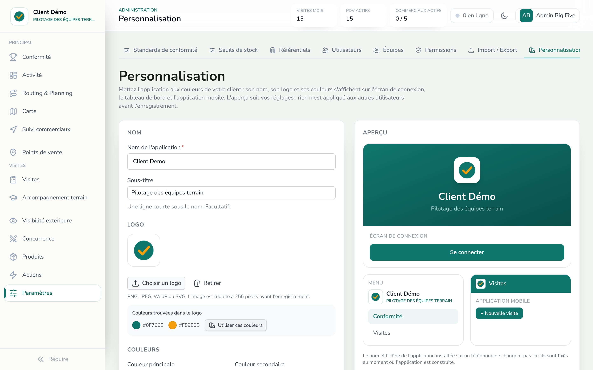
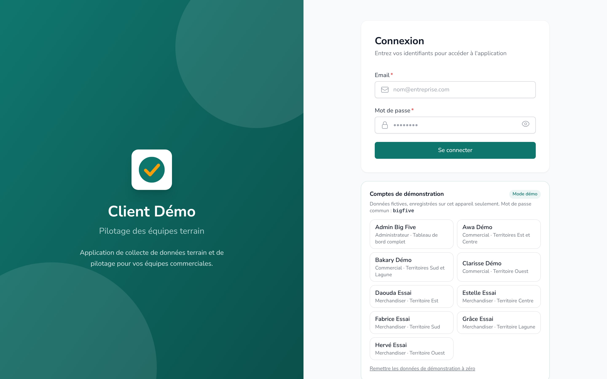
Votre nomSur la connexion, le menu et le mobile
Votre logoChargé en un clic
Vos couleursReprises automatiquement du logo
Demandez votre démonstration